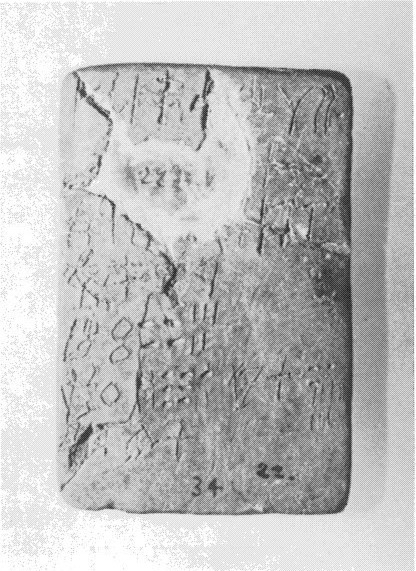
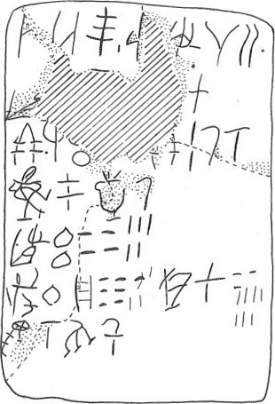

-
HT34
Names
Aliases for the inscription.
HT34, HT 34
Support
Type of Object.
Tablet
Location
Site where object was found.
Haghia Triada
Findspot
Location at Site.
Villa Magazine


# "Row Index", "Line Index", "Word Index", "Syllabogram", "Status of Reading"
# R L W I S
# 1 0 1 PA certain
1 1 0 DA none
1 1 0 JU none
1 1 0 TE none
1 1 1 *900 none
1 1 2 SI none
1 1 2 *516 none
1 1 3 *900 none
1 2 4 SA none
1 2 4 RA₂ none
1 2 5 *900 none
2 2 6 MI+JA+KA none
2 3 7 ¹⁄₃ none
3 3 8 E none
3 3 9 *900 none
3 3 10 GRA none
3 3 11 200 none
3 3 12 E+[] none
3 3 13 2 none
3 3 14 ≈¹⁄₆ none
3 3 14 ¹⁄₁₆ none
4 3 15 QA2+[?]+PU none
4 3 16 ≈¹⁄₆ none
4 3 17 QA2+[?]+RE none
4 3 18 ¹⁄₄ none
5 3 19 MI+JA+I none
5 3 20 200 none
5 3 20 40 none
5 3 20 5 none
6 3 21 SA+MU+KU none
6 3 22 100 none
6 3 23 PA₃ none
6 3 24 70 none
6 3 25 KI none
6 3 25 RO none
6 3 26 30 none
6 3 26 7 none
7 3 27 E+KA none
7 3 28 ¹⁄₁₆ none
7 3 29 PU none
7 3 30 ¹⁄₈ none
Scribe
Writer of Inscription.
Unavailable
Context
Approximate Date of Inscription.
Late Minoan IB
1500-1450 BCE
Dimensions
Height x Length x Thickness.
7.60
5.00
0.0
cm
GORILA OCR
Catalogue
Museum Reference Number.
HM 22
Hiraklion Museum
Readings
Linear A Transcription
A Linear A transcription with words parsed separately.
Line breaks match the inscription.
𐘀𐘶𐘃𐄁𐘤𐛀𐄁𐘞𐘽𐄁
𐛜𐝁
𐘡𐄁𐙉𐄚𐛅𐄈𐝅𐝇
𐚻𐝅𐚹𐝃
𐛛𐄚𐄓𐄋
𐛂𐄙𐘰𐄖𐘸𐘁𐄒𐄍
𐛆𐝇𐘫𐝄
ASCII Transcription
An ASCII transcription with words parsed separately.
Line breaks match the inscription.
DAJUTE*900SI*516*900SARA₂*900
MI+JA+KA¹⁄₃
E*900GRA200E+[]2≈¹⁄₆¹⁄₁₆
QA2+[?]+PU≈¹⁄₆QA2+[?]+RE¹⁄₄
MI+JA+I200405
SA+MU+KU100PA₃70KIRO307
E+KA¹⁄₁₆PU¹⁄₈
Linear A Tabulation
A Linear A transcription with words parsed separately.
Line breaks are logical, e.g. to represent a list.
𐘀𐘶𐘃𐄁𐘤𐛀𐄁
𐘞𐘽𐄁𐛜
𐝁𐘡𐄁𐙉𐄚𐛅𐄈𐝅𐝇𐚻𐝅𐚹𐝃𐛛𐄚𐄓𐄋𐛂𐄙𐘰𐄖𐘸𐘁𐄒𐄍𐛆𐝇𐘫𐝄
ASCII Tabulation
An ASCII transcription with words parsed separately.
Line breaks are logical, e.g. to represent a list.
DAJUTE*900SI*516*900
SARA₂*900MI+JA+KA
¹⁄₃E*900GRA200E+[]2≈¹⁄₆¹⁄₁₆QA2+[?]+PU≈¹⁄₆QA2+[?]+RE¹⁄₄MI+JA+I200405SA+MU+KU100PA₃70KIRO307E+KA¹⁄₁₆PU¹⁄₈
Commentaries
HT 34
, page tablet (HM 22) (GORILA I:
64-65)
Schoep 2002, type Ib (mixed
commodities)
|
side.line
|
statement
|
logogram
|
number
|
fraction
|
|
.1
|
DA
-
JU
-TE
•
|
SI[
]I+[?] {*516}
•
|
|
|
|
.1-2
|
SA-RA
2
•
|
MI
+
JA
+KA {*552}[
|
|
|
|
.2
|
]vest. [
|
|
|
|
|
.2
|
|
|
|
]B
|
|
.3
|
|
E
•
GRA
|
2
00
[
|
|
|
.3
|
|
]E+[•] {*525}
|
2
|
H
K
|
|
.4
|
|
QA
+[?]+PU {*510}
|
|
A
|
|
.4
|
|
QA
+[?]+
RE
{*508}
|
|
E
|
|
.5
|
|
MI
-
JA
-RU {*550}
|
245
|
|
|
.6
|
|
SA
-MU-KU
{*521}
|
100
|
|
|
.6
|
|
PA
3
|
70
|
|
|
.6
|
KI-RO
|
|
30 [[7]]
|
|
|
.7
|
|
E+KA {*526}
|
|
K
|
|
.7
|
|
PU
|
|
F
|
-
.1: DA-JU-TE (hapax), possibly "from"
DA-JU; I+?,
possibly "to" SA-RA2. If so, the tablet records assessments from DA-JU to
SA-RA
2
. Might DA-JU be related to Linear B
da-wo
, the
place
closely linked
to Phaistos? Knossos tablet F(2) 852 records 10,000+ units of grain
there, or approximately 960,000 l. Da-wo must be somewhere in the
Mesara.
-
The large numbers should imply assessments "from" DA-JU.
-
.6: If PA
3
records
an amount (
70
) to be omitted from *521 {SA+VINa}
100
, as if
delivered (PA
3
seems to act this way on HT 9, too),
then
30
is the result, apparently a deficit (KI-RO);
(see HT 8,
Davis's interpretations & notes).
-
.7: E+KA probably refers
to .3: E+[•] 2
H
K, 2 H having been delivered,
leaving the deficit K; PU might be an abbreviation for .4:
QA+[?]+RE+PU, which would then imply that F (1/8) is smaller than A
(possibly 1/6) and that a delivery of 1/24 was actually made.
.1: DA-JU-TE (hapax), possibly "from"
DA-JU; I+?,
possibly "to" SA-RA2. If so, the tablet records assessments from DA-JU to
SA-RA
2
. Might DA-JU be related to Linear B
da-wo
, the
place
closely linked
to Phaistos? Knossos tablet F(2) 852 records 10,000+ units of grain
there, or approximately 960,000 l. Da-wo must be somewhere in the
Mesara.
The large numbers should imply assessments "from" DA-JU.
.6: If PA
3
records
an amount (
70
) to be omitted from *521 {SA+VINa}
100
, as if
delivered (PA
3
seems to act this way on HT 9, too),
then
30
is the result, apparently a deficit (KI-RO);
(see HT 8,
Davis's interpretations & notes).
.7: E+KA probably refers
to .3: E+[•] 2
H
K, 2 H having been delivered,
leaving the deficit K; PU might be an abbreviation for .4:
QA+[?]+RE+PU, which would then imply that F (1/8) is smaller than A
(possibly 1/6) and that a delivery of 1/24 was actually made.
Commentary © John Younger
References
papers/GORILA-Vol1.pdf#page=100